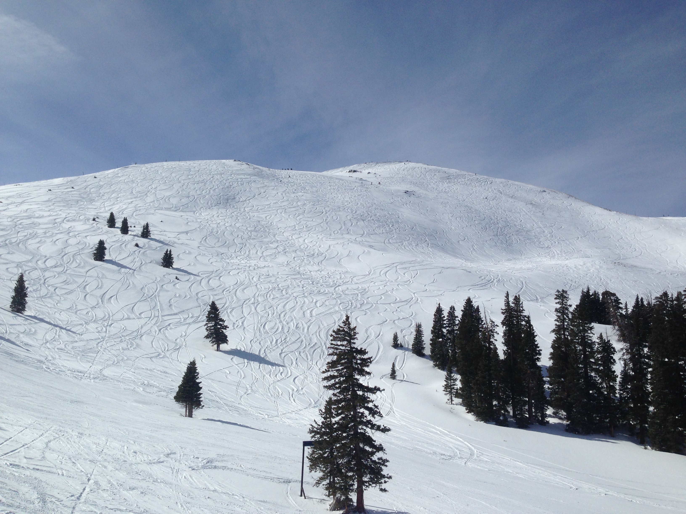
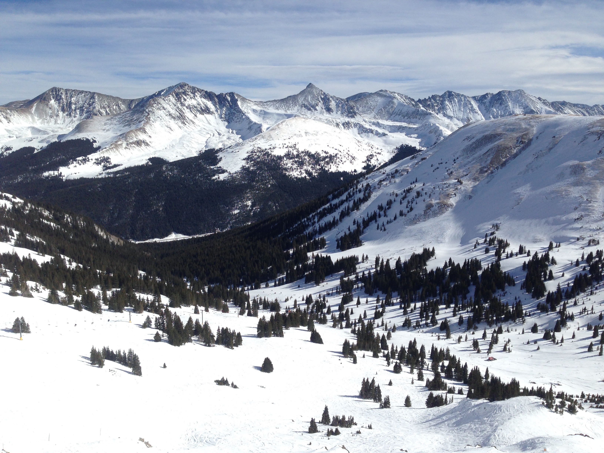

Half Dome is a granite dome in Yosemite National Park, located in northeastern Mariposa County, California, at the eastern end of Yosemite valley. The granite crest rises more than 4,773 ft above the valley floor.
This particular view is of Half Dome as seen from Washburn Point.
El Capitan is a 3,000 foot vertical rock formation in Yosemite National Park, located on the north side of Yosemite Valley, near its western end. The granite monolith is one of the world's favorite challenges for rock climbers. The formation was named "El Capitan" by the Mariposa Battalion when it explored the valley in 1851.
Tunnel View is a 3,000 foot vertical rock formation in Yosemite National Park, located on the north side of Yosemite Valley, near its western end. The granite monolith is one of the world's favorite challenges for rock climbers. The formation was named "El Capitan" by the Mariposa Battalion when it explored the valley in 1851.